Cristiano Ronaldo
Cristiano Ronaldo dos Santos Aveiro, nascido em 5 de fevereiro de 1985 na ilha da Madeira, Portugal, é amplamente reconhecido como um dos mais proeminentes jogadores de futebol de todos os tempos. Sua carreira teve início no Sporting de Lisboa, seguindo-se brilhantes passagens pelo Manchester United, Real Madrid e Juventus. Atualmente, ele atua pelo Al-Nassr, da Arábia Saudita. Ronaldo é detentor de cinco troféus Ballon d'Or e uma vasta coleção de títulos, consagrando-se como uma lenda no esporte.
Trajetória da carreira
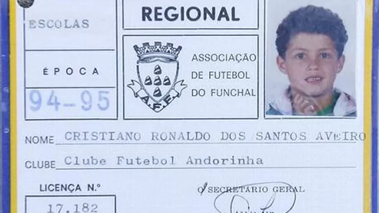
1994–1995 – Ainda criança, Cristiano Ronaldo iniciava sua trajetória no futebol pelo Andorinha, clube onde deu seus primeiros chutes e começou a construir o sonho de se tornar jogador profissional. Desde cedo, já demonstrava disciplina e uma vontade fora do comum de evoluir dentro de campo.

1996–1997 – Já um pouco mais velho, Cristiano Ronaldo continuava sua evolução no Andorinha, destacando-se entre os demais pela velocidade, habilidade e competitividade. Esse período foi fundamental para o desenvolvimento do seu talento e para dar os primeiros passos rumo a uma carreira profissional.

2000–2001 – Cristiano Ronaldo já se destacava nas categorias de base do Sporting, mostrando sua habilidade, velocidade e talento acima da média. Seu desempenho chamava atenção dentro do clube e indicava o surgimento de uma futura estrela do futebol.

2002 - Cristiano Ronaldo faz sua estreia como jogador profissional pelo Sporting, dando início a uma carreira que marcaria a história do futebol.

2003 – Cristiano Ronaldo é contratado pelo Manchester United após impressionar em um amistoso contra a equipe inglesa. Sob o comando de Sir Alex Ferguson, inicia sua trajetória no futebol inglês, desenvolvendo seu jogo e dando os primeiros passos rumo ao estrelato mundial.

2008 - Cristiano Ronaldo conquistou sua primeira Bola de Ouro, consolidando-se como um dos melhores jogadores do mundo.

No mesmo ano, Cristiano Ronaldo venceu sua primeira Liga dos Campeões da UEFA com o Manchester United, marcando época no futebol europeu.

2009 – Cristiano Ronaldo é contratado pelo Real Madrid em uma transferência histórica, tornando-se o jogador mais caro do mundo na época. Sua chegada marca o início de uma era vitoriosa, na qual se consolidaria como um dos maiores nomes da história do futebol.
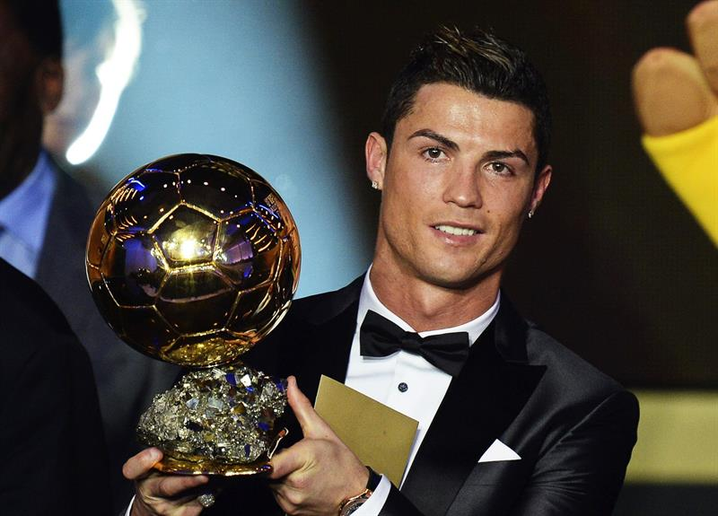
2013 – Cristiano Ronaldo conquista a Bola de Ouro após uma temporada impressionante, sendo reconhecido como o melhor jogador do mundo. O prêmio marca o retorno ao topo do futebol mundial e reforça sua consistência em alto nível.
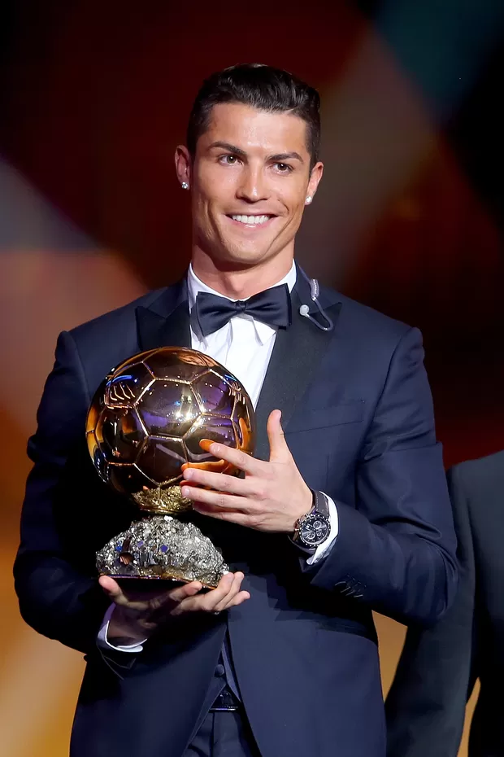
2014 – Cristiano Ronaldo conquista mais uma Bola de Ouro após uma temporada histórica, sendo peça fundamental nas conquistas do Real Madrid. O prêmio consolida sua fase dominante no futebol mundial.
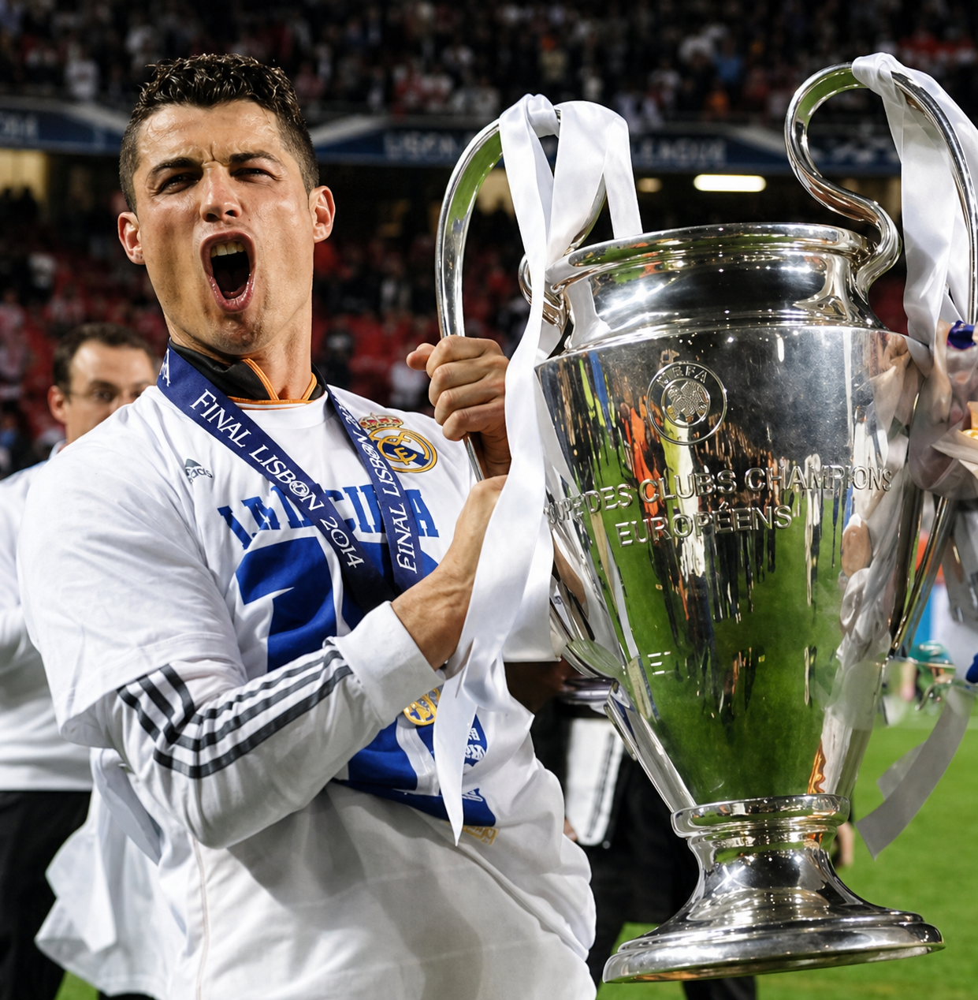
No mesmo ano, Cristiano Ronaldo conquista a Liga dos Campeões da UEFA pelo Real Madrid, sendo peça fundamental na campanha histórica conhecida como “La Décima”. A conquista marca um dos momentos mais importantes de sua carreira e reforça seu protagonismo em grandes decisões.
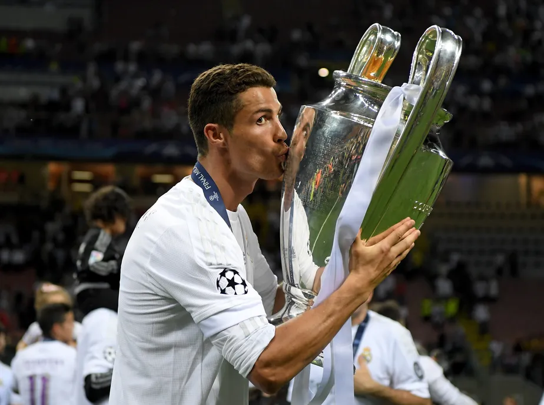
2016 – Cristiano Ronaldo conquista mais uma Liga dos Campeões da UEFA pelo Real Madrid, sendo decisivo ao longo da competição e marcando o pênalti final na decisão. O título reforça sua mentalidade vencedora e protagonismo em momentos decisivos.

No mesmo ano, Cristiano Ronaldo conquista mais uma Bola de Ouro, coroando uma temporada histórica marcada por grandes títulos e atuações decisivas. O prêmio reforça sua posição entre os maiores jogadores da história do futebol.

No mesmo ano, Cristiano Ronaldo conquistou a Eurocopa com Portugal, garantindo o primeiro grande título da seleção na história. Mesmo saindo lesionado na final, sua liderança foi fundamental para a vitória contra a França.
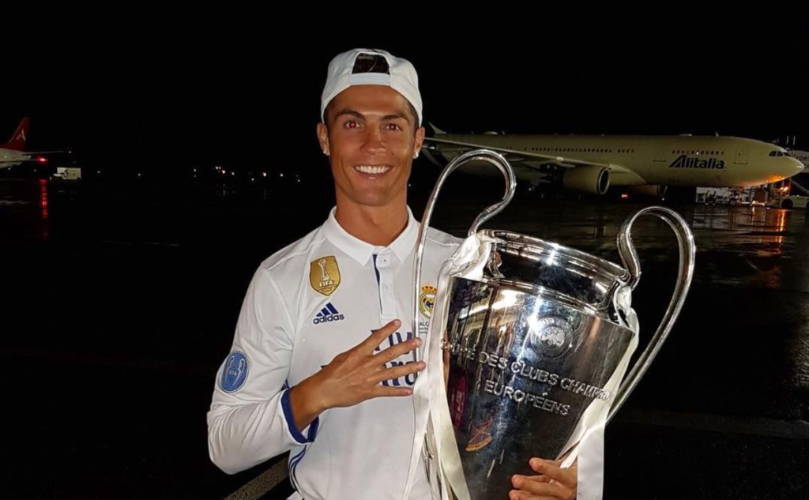
2017 – Cristiano Ronaldo conquista mais uma Liga dos Campeões da UEFA pelo Real Madrid, sendo decisivo na final com dois gols. A vitória garante o bicampeonato consecutivo do clube e reforça seu domínio no cenário europeu.
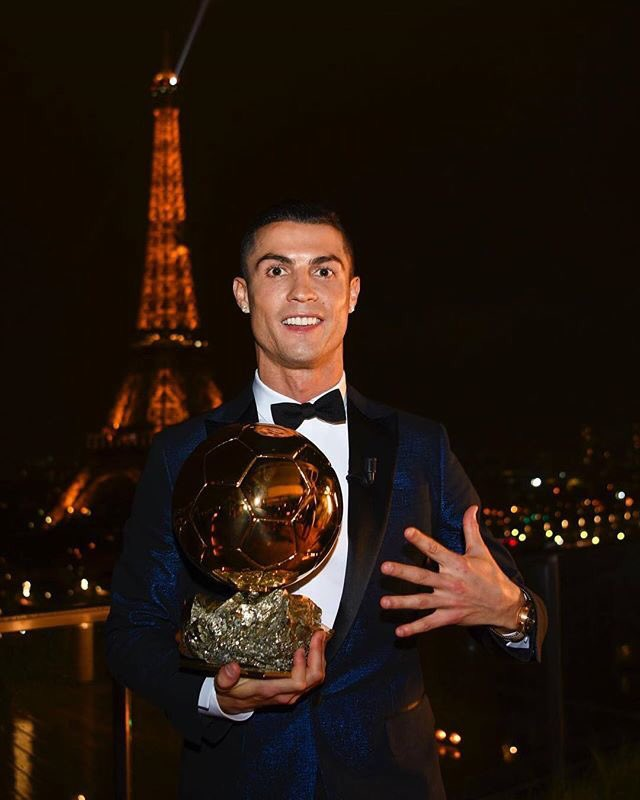
No mesmo ano, Cristiano Ronaldo conquistou sua quinta Bola de Ouro, igualando Lionel Messi e reforçando seu lugar entre os maiores jogadores da história.

2018 – Cristiano Ronaldo conquista sua 5ª Liga dos Campeões da UEFA pelo Real Madrid, sendo a terceira consecutiva com o clube. Além do título, se consolida como o maior artilheiro da história da competição, reforçando ainda mais seu legado no futebol mundial.

2018 – Cristiano Ronaldo deixa o Real Madrid e é contratado pela Juventus, iniciando um novo desafio no futebol italiano após uma das passagens mais vitoriosas da história do clube espanhol.
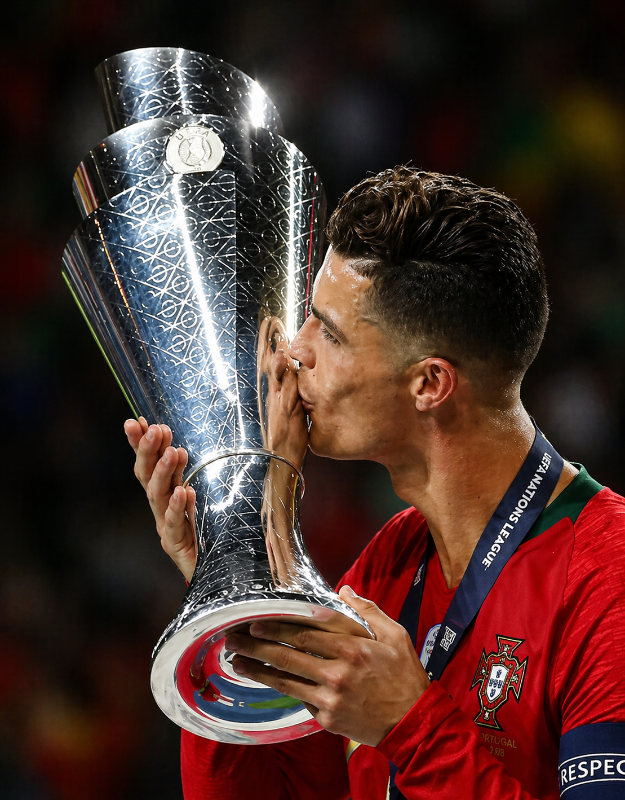
2019 – Cristiano Ronaldo conquista a Liga das Nações da UEFA com a seleção de Portugal, sendo peça fundamental na campanha. O título marca mais um momento histórico com a seleção e reforça sua importância no cenário internacional.
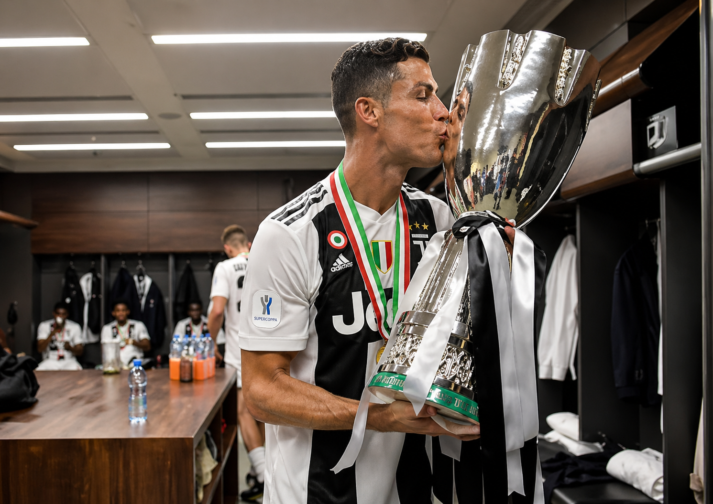
2019 – Cristiano Ronaldo se destaca em sua primeira temporada pela Juventus, sendo decisivo em jogos importantes e ajudando o clube na conquista do título nacional. Sua adaptação rápida ao futebol italiano reforça sua capacidade de brilhar em diferentes ligas.
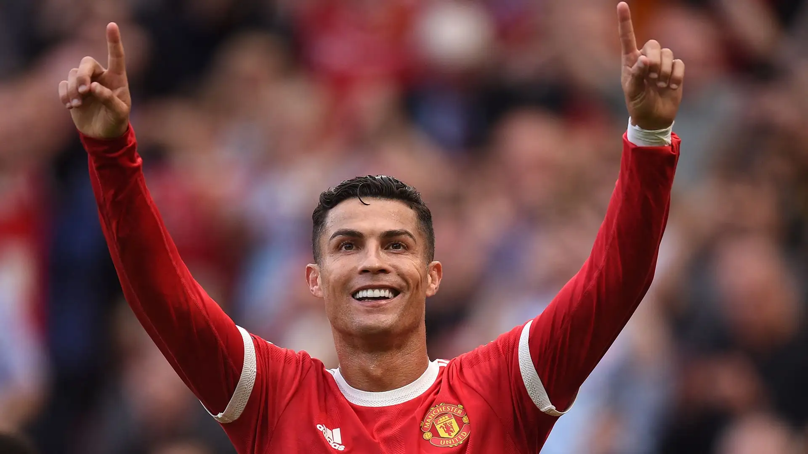
2021 – Cristiano Ronaldo retorna ao Manchester United, reacendendo a conexão com o clube onde se tornou uma estrela mundial. Sua volta gera enorme expectativa e marca um momento emocionante na sua carreira.

2023 – Após um período conturbado no Manchester United, Cristiano Ronaldo encerra sua passagem pelo clube e acerta com o Al-Nassr. A transferência marca um novo capítulo em sua carreira, levando sua trajetória para o futebol saudita e ampliando ainda mais seu impacto global.

2025 – Cristiano Ronaldo volta a conquistar a Liga das Nações da UEFA com a seleção de Portugal, reafirmando sua longevidade no mais alto nível e sua importância contínua para o futebol internacional.

2026 – Aos 41 anos, Cristiano Ronaldo se prepara para disputar mais uma Copa do Mundo FIFA, podendo chegar à sua 6ª participação no torneio. Já consolidado como o maior artilheiro da história do futebol, com mais de 960 gols na carreira, sua longevidade e consistência em alto nível reforçam um legado único no esporte.
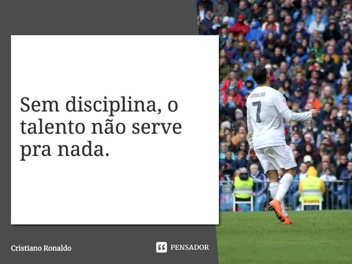
Legado – Cristiano Ronaldo construiu uma das maiores carreiras da história do futebol, marcada por recordes, títulos e uma mentalidade competitiva incomparável. Mais do que números, seu impacto vai além dos gramados, inspirando milhões de pessoas ao redor do mundo com sua disciplina, dedicação e busca constante pela excelência. Seu nome já está eternamente marcado na história do esporte.